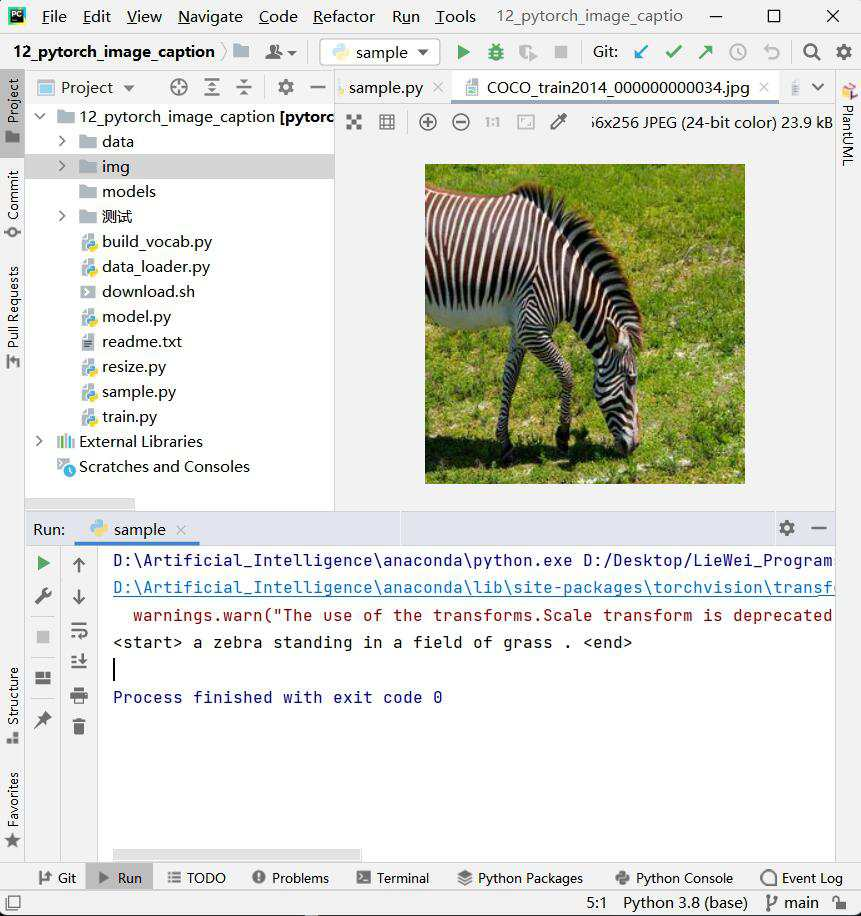
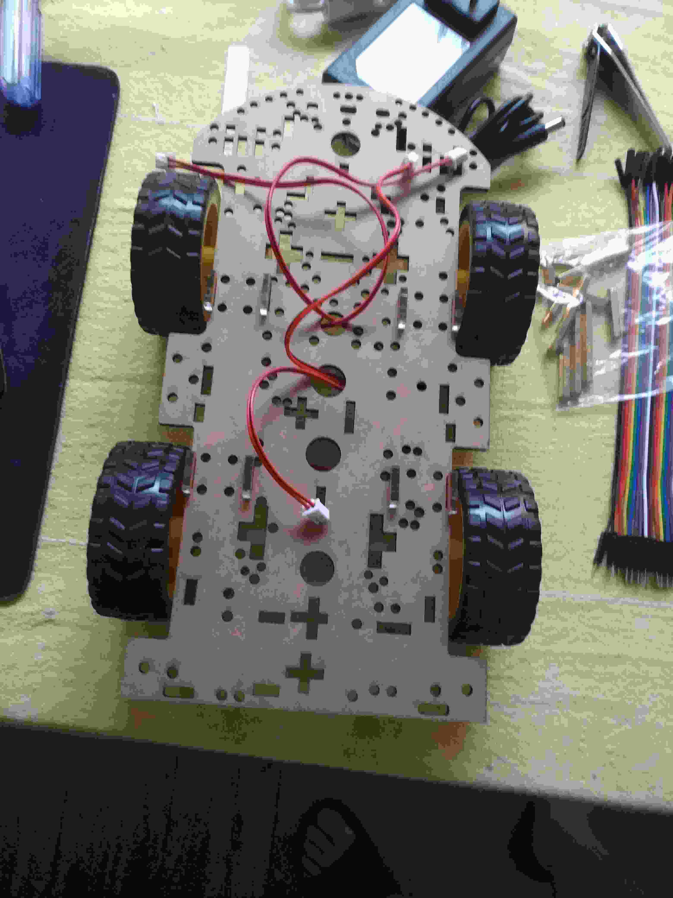
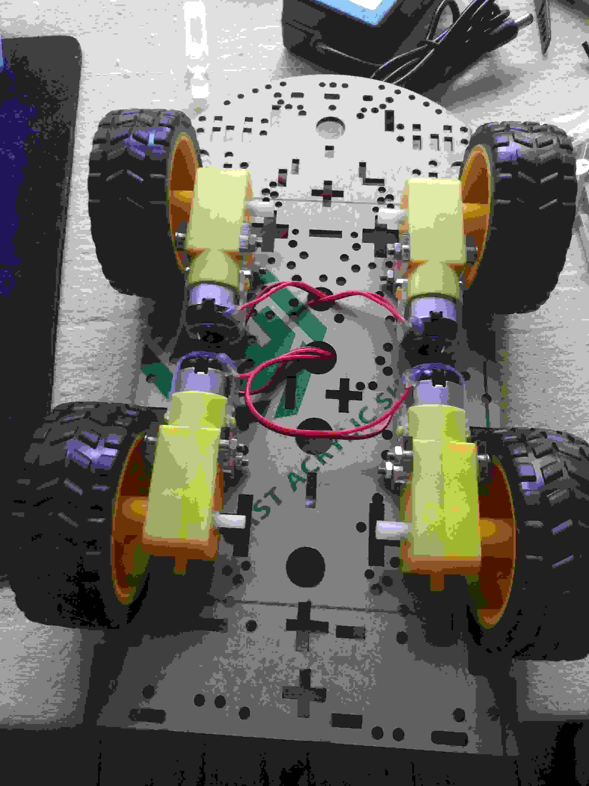

返回简历
特殊信息说明
电子科技大学2017-2019（2021）毕业年份说明
实际是2019年就可以毕业，最开始报的是大自考，大自考要求过一共13门课程（6门必考，其余选修），完成毕业设计后即可毕业，在课程上2019年我已经做到了。
2021年才拿到也是证的原因：课程考完后不知道如何写论文做毕设，也没人给我毕设题目，很迷茫，去找了电子科大自学助考招生办4次，都未找到负责大自考的人，因为几乎都是小自考的老师，就说自己也不懂糊弄一下就把我打发走了，每次都无果而反。
再三考虑之后，也是为了有人能给我指导路线，也能正经的在学校听一下课，我把称之为全日制的归属感，因为小自考是住校在校学习，就申请转成了小自考，本来我认为只需要完成毕业设计就可以毕业，但是阴差阳错给我办理成了小自考入学，而小自考毕业至少需要两年，所以毕业年份就拖延了2年，并获得了top前%2的奖学金。
大自考的证明，转小自考后这些信息就被注销了，这是侥幸保留的：
淘宝早期开店记录
蓝翔期间自学编程，自考电子科大，利用经过自己检验过的获得的学习资料开淘宝店的一些记录。
薄利多销，自动发货，销量大概又7000单，好评更是4000+，但那个时候认为学技术更重要，后来便放下了
面对面（局部闲鱼）二手交易与售卖结合创业 与 摆摊记录
在蓝翔期间做的事情，都是一个寝室的同学换着摆，赚了钱大家分。在此基础上我们还建立了校内群，科技小馆-面对面：校内送货上门，以及校内同学们的二手交易
早期大疆无人机飞行记录，以及维修记录
那时候玩大疆还不需要无人机飞行证书，也没有商业证书，维修更是没有教程，大疆悟1炸机后，我们除了云台修不了，其他的很多部件都是利用学校学习和实习的经验最终购买配件的方式自己修好了，但是代价是配件价格几乎都可以又买个新的了
图形学接单系列、深度学习接单系列
图形学的从淘宝，闲鱼，中介那里接的部分单子的展示

Qt绘图软件
Qt绘图软件，毕业设计，图元设计方法，有回退功能，多画板设计，贝塞尔曲线，B样条的实现，等等
OCR物料编码系统
钢铁产业线，线材、棒材、热轧、冷轧的物料编码识别于追踪。难点在于数字模糊，精度低，工作重点也就在于优化精度，提高速度。
高速车流追踪
一个是车辆检测，进出的流量计算，以及采用了畸变矫正的方式来测量车速
UE4的一些学习记录
一个是车辆检测，进出的流量计算，以及采用了畸变矫正的方式来测量车速
循迹小车
红外线黑胶带寻迹，实时视频传输，红外避障功能，等等


返回简历